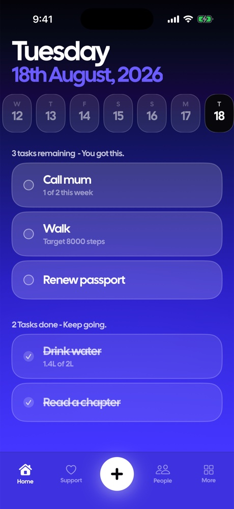
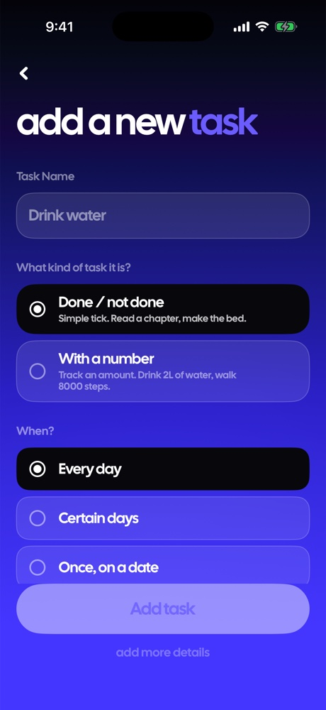
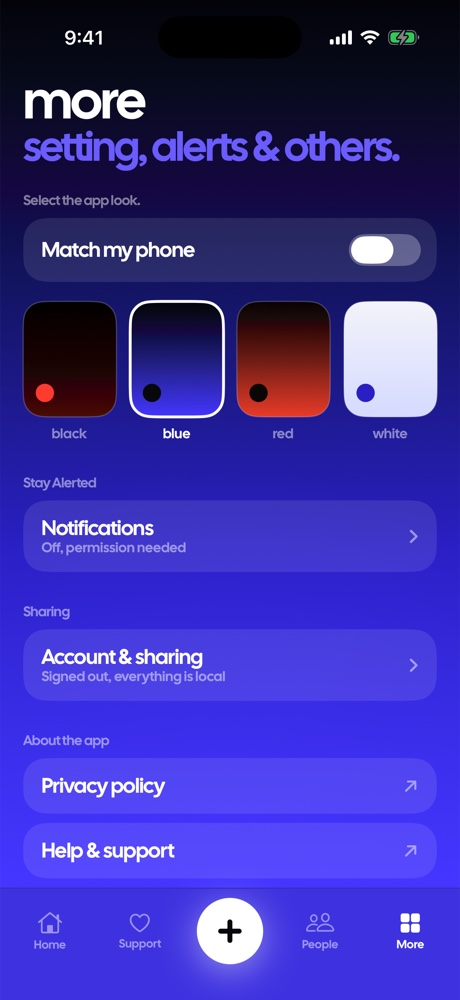

Add what you want to do. Tick it off when you've done it. That's the whole app.
Download on the App Store
Most habit apps punish you for having a life. TaskDone doesn't count consecutive days, because a number that resets when you get ill or go on holiday isn't motivation — it's a reason to quit. Miss a day and nothing happens. Come back whenever, go to any past day, and tick things off then.
Sharing
Add the people you live or work with by sending them a link. Once they accept you're connected both ways — either of you can hand the other a task, and you can see when it's done.
No groups to manage. No admin. Nobody gets added without an invite you sent or a code you typed yourself. If someone's forgotten, one gentle nudge tells them which task you mean.


Daily, chosen weekdays, a set number of times a week, or a one-off on a date.
A one-off with no fixed date rolls forward until it's actually done.
Not just ticks — 2L of water, 8,000 steps, 30 pages. Record the number.
Tick off any earlier day. TaskDone records the day it counts for, not the day you opened the app.
Drop a single occurrence of a repeating task without losing the whole thing.
Reminders when you want them, silence when you don't.
TaskDone works completely without an account. Sign in only if you want to share — and even then we ask Apple for your name and nothing else. No email, no contacts, no tracking, no ads, no analytics. Your profile picture never leaves your phone.
Not a trial, not a freemium ladder. Every feature is free forever. There's a tip jar if you'd like to support it, and it unlocks nothing, because there's nothing to unlock.